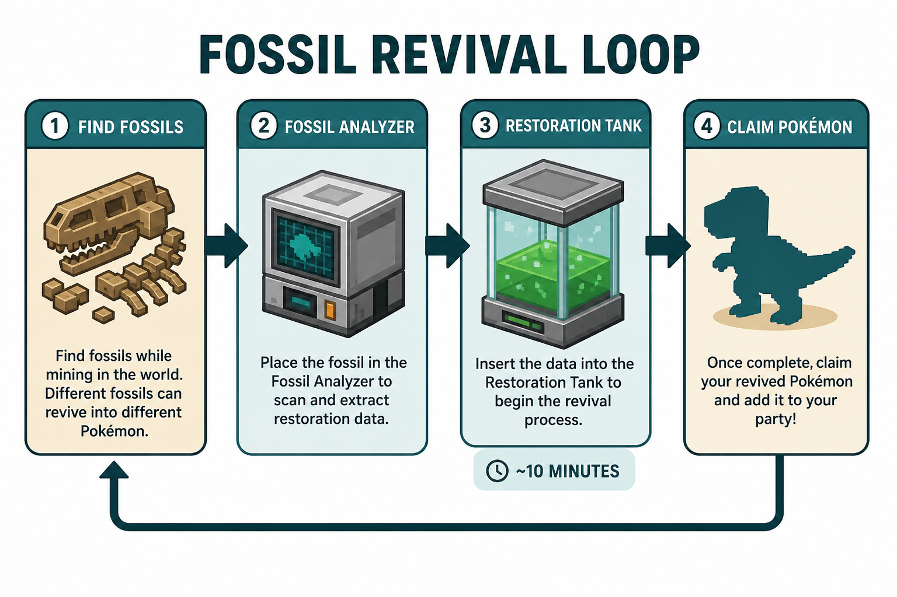
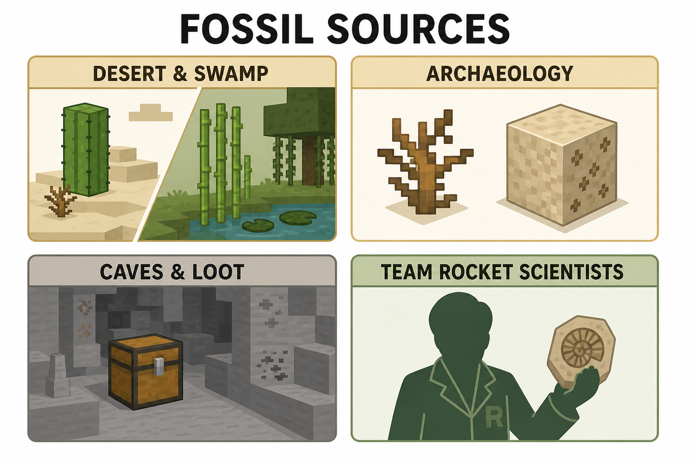

Fossil hunting & resurrection
Find fossils, build the Cobblemon machines, revive every standard and Galar form, then tackle Origin Fossil / Ancient DNA with PokeHaven’s Giovanni DNA bonus.
Contents
What this page covers
Everything you need for fossil hunting and resurrection on PokeHaven EU (CobbleVerse 1.7.42): where fossils drop, which machines to build, every standard fossil → Pokémon, Galar two-piece combos, quests, PokeHaven bonuses, and the late-game Origin Fossil / Ancient DNA routes.
- There is no “DNA Synthesizer” block in this pack — revival uses Cobblemon’s Restoration Tank (also called Fossil Machine / Resurrection Machine in quests).
- Always check REI (E) for live crafts — recipes beat any screenshot.
{kind=link}

Quick start
- Get any fossil (caves, desert/swamp worldgen, archaeology, loot, Team Rocket scientists).
- Craft a Fossil Analyzer, Restoration Tank, and Monitor (REI: search those names).
- Place them as a working fossil machine setup (quest text: “assemble a Restoration Tank”).
- Insert fossil(s) — Galar forms need two matching pieces.
- Wait ~10 minutes for resurrection, then claim the Pokémon.
Protected machines: if a fossil machine belongs to another player you will see a protect toast — claim your own setup with FTB Chunks.
Where fossils come from
{kind=link}

| Source | What you get | Notes |
|---|---|---|
| Desert & swamp biomes | Vanilla fossil features in worldgen | Dig / explore those biomes |
| Archaeology (suspicious sand/gravel) | Fossils + other ruin loot | Brush; Luck “Fossil Favor” can boost related drops |
| Caves / chests / loot tables | Standard Cobblemon fossils | Quest copy: “caves / loot” |
| Team Rocket scientists | Fossil pool on wins | First clear can also drop lumymon:fossilized_helmet (Type: Null) |
| Legendary archaeology / fishing (RCT tables) | Extra fossil rolls | Late / specialty loot |
| Cobbleworkers Archeologist | Archaeology-style loot | See Cobbleworkers |
Holding any item in the Cobblemon fossils tag auto-completes the FTB quest Obtain a fossil (Quests → Fossils and TM Lab).
Machines & settings (PokeHaven)
| Machine | Item ID | Job |
|---|---|---|
| Fossil Analyzer | cobblemon:fossil_analyzer | Reads / prepares fossils for the tank |
| Restoration Tank | cobblemon:restoration_tank | Actually resurrects the Pokémon |
| Monitor | cobblemon:monitor | Part of the machine assembly |
| Config | Value on PokeHaven | Meaning |
|---|---|---|
maxInsertedFossilItems | 2 | Enables Galar two-piece fossils |
fossilMachineResurrectionTime | 12000 ticks | ~10 minutes per revive |

Standard fossils → Pokémon
One fossil piece → one Pokémon (Cobblemon defaults; not overridden by CobbleVerse datapack).
| Fossil item | Item ID | Pokémon |
|---|---|---|
| Helix Fossil | cobblemon:helix_fossil | Omanyte |
| Dome Fossil | cobblemon:dome_fossil | Kabuto |
| Old Amber | cobblemon:old_amber_fossil | Aerodactyl |
| Root Fossil | cobblemon:root_fossil | Lileep |
| Claw Fossil | cobblemon:claw_fossil | Anorith |
| Skull Fossil | cobblemon:skull_fossil | Cranidos |
| Armor Fossil | cobblemon:armor_fossil | Shieldon |
| Cover Fossil | cobblemon:cover_fossil | Tirtouga |
| Plume Fossil | cobblemon:plume_fossil | Archen |
| Jaw Fossil | cobblemon:jaw_fossil | Tyrunt |
| Sail Fossil | cobblemon:sail_fossil | Amaura |
Galar fossils (two pieces)
Insert both pieces into the machine (2-slot config). Wrong pairing = wrong (or no) result — match the table.
| Piece A | Piece B | Pokémon |
|---|---|---|
| Fossilized Bird | Fossilized Drake | Dracozolt |
| Fossilized Bird | Fossilized Dino | Arctozolt |
| Fossilized Fish | Fossilized Drake | Dracovish |
| Fossilized Fish | Fossilized Dino | Arctovish |
Item IDs: cobblemon:fossilized_bird, fossilized_fish, fossilized_drake, fossilized_dino.
Achievement: Didn’t Stop to Think (Galar revive) — see Achievements.
Pack specials (not normal fossils)
| Inputs | Result | How you get it |
|---|---|---|
lumymon:ancient_dna + lumymon:cloning_catalyst | Mewtwo | Giovanni DNA + craft catalyst (REI) |
lumymon:ancient_dna + lumymon:cloning_catalyst_shiny | Shiny Mewtwo | Same DNA path, shiny catalyst |
cobblemon:dome_fossil + dubious_disc + nether_star | Genesect | Pack fossil recipe override |
lumymon:fossilized_helmet | Type: Null | Team Rocket scientist first clear |
lumymon:origin_fossil | Mew route | Craft after Champion Blue — full steps on Post-game |
PokeHaven: Giovanni drops Ancient DNA on 1st win and again on 1st rematch (2nd win), so you can do Origin Fossil (Mew) and Mewtwo without trading. Details: Post-game and legendaries.
Quests — Fossils and TM Lab
Open the quest book with O. Chapter under Trainer Systems:
| Quest | What to do |
|---|---|
| Obtain a fossil | Hold any #cobblemon:fossils item (auto-grants) |
| Resurrect a fossil | Complete a revive in the Restoration Tank |
| Craft TM / star TM | TM Lab half of the chapter — finishes the chain (star TM rewards include a Master Ball) |
PokeHaven bonuses
| Feature | Effect |
|---|---|
| Luck of the Draw — Fossil Favor | On revive: bonus Rare Candy + Exp Candy M |
| Did-you-know tip | Fossil Favor also ties into archaeology candy/fossil drop messaging |
| Machine protect feedback | Clear toast if you interact with someone else’s fossil machine |
Achievements checklist
| Tab | Examples |
|---|---|
| Cobblemon geological | Consult the Fossil · Life Finds a Way · Didn’t Stop to Think |
| CobbleVerse post-game | Craft Origin Fossil · Obtain Ancient DNA · Revive Mewtwo · Catch Mew |
Full lists: Achievements.
Common mistakes
| Mistake | Fix |
|---|---|
| Expecting a “DNA Synthesizer” | Use Restoration Tank + Analyzer + Monitor |
| Only one Galar piece inserted | Need both pieces (2 slots) |
| Leaving revive unclaimed / unprotected | Claim the chunks; wait the full ~10 minutes |
| Skipping REI for Origin Fossil / catalysts | Search the exact item name after Blue / Giovanni |
| Using someone else’s tank | Build your own — protect toast otherwise |
See also: Post-game and legendaries · Quests · Achievements · Recipe browser · Cobbleworkers · Progression